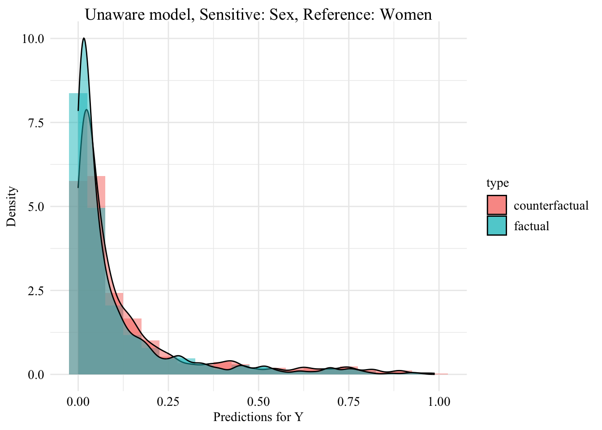
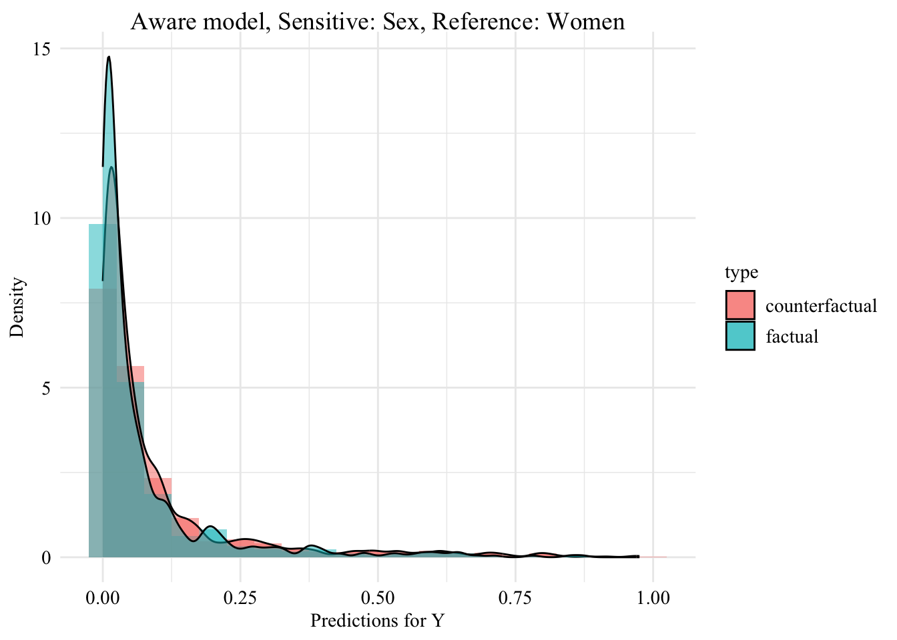

In this chapter, we extend the analysis from the previous part to the Adult Income dataset from the UCI Machine Learning Repository. We use a cleaned version of this dataset available in the {fairadapt} R package.
The adult dataset contains information that allow to predict whether a person’s income (Y) is over $50,000 a year. We will use gender as the protected binary variable here (S). Other characteristics such as the age, the native country, the marital status and so on will be used. Note that unlike previously, the set of covariates includes both numerical and categorical variables.
We load functions defined in our small package (notably, split_dataset()):
library(devtools)
Loading required package: usethis
load_all("../seqtransfairness/")
ℹ Loading seqtransfairness
We fit a logistic regression model on the data to predict the outcome binary variable. First, we split the dataset into two sets: train (70%) and test (30%).
unaware logistic regression classifier: model without including the sensitive attribute.
aware logistic regression classifier: model with the sensitive attribute included in the set of features.
To do so, we define the training function, log_reg_train().
The log_reg_train() function.
#' @param train_data Train set.#' @param test_data Test set.#' @param s Name of the sensitive attribute.#' @param y Name of the target variable.#' @param type If `"type=aware"`, the model includes the sensitive attributes,#' otherwise, if `type=unaware`, it does not.#' #' @returns A list with three elements:#' * `model`: The estimated logistic regression model.#' * `pred_train`: Estimated scores on the train set.#' * `pred_test`: Estimated scores on the test set.#' #' @importFrom dplyr select#' @importFrom rlang !!#' @importFrom stats glm predict as.formulalog_reg_train <-function(train_data, test_data, s, y,type =c("aware", "unaware")) {if (type =="unaware") { train_data_ <- train_data %>%select(-!!s) test_data_ <- test_data %>%select(-!!s) } else { train_data_ <- train_data test_data_ <- test_data }# Train the logistic regression model form <-paste0(y, "~.") model <-glm(as.formula(form), data = train_data_, family = binomial)# Predictions on train and test sets pred_train <-predict(model, newdata = train_data_, type ="response") pred_test <-predict(model, newdata = test_data_, type ="response")list(model = model,pred_train = pred_train,pred_test = pred_test )}
Let us train the two models. Then, we extract the predicted values on both the train set and the test set.
# Unaware logistic regression classifier (model without S)pred_unaware <-log_reg_train(data_train, data_test, s = s, y = y, type ="unaware")
Warning in predict.lm(object, newdata, se.fit, scale = 1, type = if (type == :
prediction from rank-deficient fit; attr(*, "non-estim") has doubtful cases
pred_unaware_train <- pred_unaware$pred_trainpred_unaware_test <- pred_unaware$pred_test# Aware logistic regression classifier (model with S)pred_aware <-log_reg_train(data_train, data_test, s = s, y = y, type ="aware")
Warning in predict.lm(object, newdata, se.fit, scale = 1, type = if (type == :
prediction from rank-deficient fit; attr(*, "non-estim") has doubtful cases
We create a table for each model, with the sensitive attribute and the predicted value by the model (\(\hat{y}\)), only for observations from the test set.
Warning in predict.lm(object, newdata, se.fit, scale = 1, type = if (type == :
prediction from rank-deficient fit; attr(*, "non-estim") has doubtful cases
Warning in predict.lm(object, newdata, se.fit, scale = 1, type = if (type == :
prediction from rank-deficient fit; attr(*, "non-estim") has doubtful cases
Let us change the sensitive attribute of individuals from the source group (women) to the target group (men). Then, we use both models (unaware and aware) to predict the target binary variable.
Warning in predict.lm(object, newdata, se.fit, scale = 1, type = if (type == :
prediction from rank-deficient fit; attr(*, "non-estim") has doubtful cases
Warning in predict.lm(object, newdata, se.fit, scale = 1, type = if (type == :
prediction from rank-deficient fit; attr(*, "non-estim") has doubtful cases
Let us have a look at the distribution of the predicted scores of the classifier in both groups, when the predictions are made after setting the sex attribute of all women to “Male”. Since the model does not use the sensitive attribute, changing it will result in absolutely no change in its predictions in this case.
The predicted values using the initial characteristics (the factuals), for the unaware model are stored in the object pred_unaware_all. We put in a table the initial characteristics (factuals) and the prediction made by the unaware model:
Figure 12.4: Unaware model, Sensitive: Sex, Reference: Men
12.2.2 Aware Model
We turn to the aware model. This time, the sensitive attribute is used by the classifier when it is trained. Hence, changing the sensitive attribute of individuals in the source group to that of the target group may change the predicted values for the binary outcome variable.
The predicted values by the model, on the initial characteristics (on the factuals) are stored in the pred_aware_all object.
We create a tibble with the factuals and the predictions by the aware model:
Let us get the predicted values for the counterfactuals, using the unaware model:
model_unaware <- pred_unaware$modelpred_unaware_fpt <-predict( model_unaware, newdata = df_counterfactuals_fpt, type ="response")
Warning in predict.lm(object, newdata, se.fit, scale = 1, type = if (type == :
prediction from rank-deficient fit; attr(*, "non-estim") has doubtful cases
We create a table with the counterfactual characteristics and the prediction by the unaware model:
Figure 12.7: Unaware model, Sensitive: Sex, Reference: Women

12.3.2 Aware Model
Now, we turn to the model that includes the sensitive attribute, i.e., the aware model.
Recall we created an object called df_counterfactuals_fpt which contains the counterfactual characteristics of all students, obtained with fairadapt:
df_counterfactuals_fpt
# A tibble: 2,000 × 9
sex age native_country marital_status education_num workclass
<fct> <dbl> <fct> <fct> <dbl> <fct>
1 Male 18 United-States Not-Married 13 Private
2 Female 55 United-States Not-Married 14 Private
3 Female 50 Not-United-States Not-Married 10 Private
4 Female 25 United-States Not-Married 7 Other/Unknown
5 Male 36 United-States Married 9 Government
6 Female 26 United-States Not-Married 10 Private
7 Female 47 United-States Not-Married 10 Private
8 Female 40 Not-United-States Married 9 Private
9 Female 34 United-States Not-Married 12 Private
10 Male 39 United-States Not-Married 13 Private
# ℹ 1,990 more rows
# ℹ 3 more variables: hours_per_week <dbl>, occupation <fct>, income <fct>
We make predictions with the aware model on these counterfactuals:
model_aware <- pred_aware$modelpred_aware_fpt <-predict( model_aware, newdata = df_counterfactuals_fpt, type ="response")
Warning in predict.lm(object, newdata, se.fit, scale = 1, type = if (type == :
prediction from rank-deficient fit; attr(*, "non-estim") has doubtful cases
Then, we create a table with the counterfactuals and the predicted value by the aware model:
Lastly, we can visualize the distribution of predicted values by the aware model once the characteristics of the individuals who are not on the reference group have been modified using fairadapt.
Figure 12.9: Aware model, Sensitive: Sex, Reference: Women

12.3.3 Counterfactual Demographic Parity
Let us assume here that the reference group is “Men” (i.e., the group with the most individuals in the dataset). We focus on the minority, i.e., “Women”. We consider here that the model is fair towards the minority class if: \[
P(\hat{Y}_{S \leftarrow \text{Men}} = 1 | S = \text{Women}, \boldsymbol{X}) = P(\hat{Y} = 1 | S = \text{Women}, \boldsymbol{X})
\] If the model is fair with respect to this criterion, the proportion of Women predicted to have grades above the median should be the same as if they had been Men.
We now turn to sequential transport (the methodology developed in our paper). We use the seq_trans() function defined in our small package to perform a fast sequential transport on causal graph.
sequential_transport <-seq_trans(data = adult, adj = adj_mat, s ="sex", S_0 ="Female", y ="income")
Transporting age
Transporting native_country
Transporting marital_status
# weights: 4 (3 variable)
initial value 927.430928
final value 779.199404
converged
Transporting education_num
Transporting workclass
# weights: 24 (15 variable)
initial value 1854.861855
iter 10 value 1418.843645
iter 20 value 1226.860388
final value 1224.646984
converged
Transporting hours_per_week
Transporting occupation
Warning in nnet::multinom(x_S0 ~ ., data = mutate(data_1_parents, x_S0 =
x_S1)): group 'Armed-Forces' is empty
# weights: 84 (65 variable)
initial value 3531.058707
iter 10 value 3268.247749
iter 20 value 3150.146313
iter 30 value 3013.347818
iter 40 value 2880.348969
iter 50 value 2868.888514
iter 60 value 2865.551923
iter 70 value 2864.693363
iter 80 value 2864.661456
iter 90 value 2864.641525
final value 2864.640591
converged
We build a dataset with the sensitive attribute of Women changed to Male, and their characteristics changed to their transported characteristics:
counterfactuals_unaware_seq_women <- df_counterfactuals_seq_women |>mutate(pred = pred_seq_unaware, type ="counterfactual")counterfactuals_aware_seq_women <- df_counterfactuals_seq_women |>mutate(pred = pred_seq_aware, type ="counterfactual")
Let us put in a single table the predictions made by the classifier (either aware or unaware) on Women based on their factual characteristics, and those made based on the counterfactuals:
Figure 12.12: Densities of predicted scores for Women with factuals and with counterfactuals. The yellow dashed line corresponds to the density of predicted scores for Women, using factuals.
Figure 12.13: Densities of predicted scores for Women with factuals and with counterfactuals. The yellow dashed line corresponds to the density of predicted scores for Women, using factuals.
12.6 Metrics
We define a small function, get_prob(), to compute the average score predicted by the model (either the aware model or the unaware model) in sub-groups identified by positions of observations.
The get_prob() function.
#' Computes the average predicted score returned by one of the classifiers.#' #' @param type Either `"factual"`, `"naive"`, `"fairadapt"`, or `"seq"`.#' @param model Type of model: `"aware"` is the classifier used the sensitive#' attribute, `"unaware"` otherwise.#' @param ind Index of rows in the datasets to compute the statistics on.#' @param sensitive Name of the sensitive group in which the focus is on.get_prob <-function(type, model ="aware", ind, sensitive ="Women") {if (type =="factual") { x <-get(paste0("factuals_", model)) } elseif (type =="fairadapt") { x <-get(paste0("counterfactuals_", model, "_fpt")) } elseif (type =="seq") { x <-get(paste0("counterfactuals_", model, "_seq_women")) } elseif (type =="naive") { x <-get(paste0("counterfactuals_", model, "_naive")) } else {stop("Error type.") } val <- x |>slice(!!ind) |>pull("pred")tribble(~type, ~model, ~sensitive, ~value_type, ~value, type, model, sensitive, "mean", mean(val), type, model, sensitive, "sd", sd(val) )}
Table 12.1: Fairness metrics computed on scores predicted by the classifier based on the factuals or the different versions of the counterfactuals, for the aware model (sensitive variable used to train the classifier) and the unaware model (sentitive variable not provided to train the classifier).